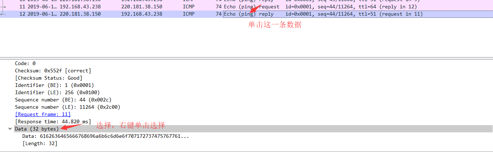
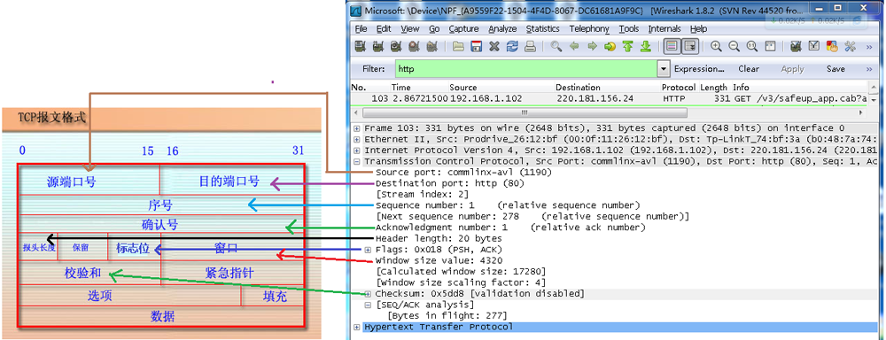

使用 wireshark
- 参考：
Wireshark is available for free, is open source, and is one of the best packet analyzers available today.
Wireshark 功能
简单抓包示例
- 打开wireshark 2.6.5
- 择菜单栏上Capture -> Option，勾选目标网卡 Promiscuous(混杂模式)
勾选：”Enable promiscuous mode on all interfaces”
点击 Start 按钮 - 启动后，wireshark处于抓包状态中。
wireshark 功能区简介
-
Display Filter(显示过滤器)
用于设置过滤条件进行数据包列表过滤。菜单路径：Analyze -> Display Filters。 -
Packet List Pane(数据包列表)
显示捕获到的数据包，每个数据包包含编号，时间戳，源地址，目标地址，协议，长度，以及数据包信息。 不同协议的数据包使用了不同的颜色区分显示。
协议颜色标识定位在菜单栏 View -> Coloring Rules。 -
Packet Details Pane(数据包详细信息), 在数据包列表中选择指定数据包
（1）Frame: 物理层的数据帧概况
（2）Ethernet II: 数据链路层以太网帧头部信息
（3）Internet Protocol Version 4: 互联网层IP包头部信息
（4）Transmission Control Protocol: 传输层T的数据段头部信息，此处是TCP
（5）Hypertext Transfer Protocol: 应用层的信息，此处是HTTP协议TCP包的具体内容

数据包列表中时间戳显示格式。
调整方法为View -> Time Display Format -> Date and Time of Day。
Wireshark IO图形工具分析数据流
菜单 Statistics – IO Graphs
-
常用排错过滤条件:
对于排查网络延时/应用问题有一些过滤条件是非常有用的：
- tcp.analysis.lost_segment：
表明已经在抓包中看到不连续的序列号。报文丢失会造成重复的ACK，这会导致重传。 - tcp.analysis.duplicate_ack：
显示被确认过不止一次的报文。大凉的重复ACK是TCP端点之间高延时的迹象。 - tcp.analysis.retransmission：
显示抓包中的所有重传。如果重传次数不多的话还是正常的，过多重传可能有问题。
这通常意味着应用性能缓慢和/或用户报文丢失。 - tcp.analysis.window_update：
将传输过程中的TCP window大小图形化。
如果看到窗口大小下降为零，这意味着发送方已经退出了，并等待接收方确认所有已传送数据。
这可能表明接收端已经不堪重负了。 - tcp.analysis.bytes_in_flight：
某一时间点网络上未确认字节数。
未确认字节数不能超过你的TCP窗口大小（定义于最初3此TCP握手），为了最大化吞吐量你想要获得尽可能接近TCP窗口大小。
如果看到连续低于TCP窗口大小，可能意味着报文丢失或路径上其他影响吞吐量的问题。 - tcp.analysis.ack_rtt：
衡量抓取的TCP报文与相应的ACK。如果这一时间间隔比较长那可能表示某种类型的网络延时（报文丢失，拥塞，等等）。
- tcp.analysis.lost_segment：
-
函数:
IO Graphs有六个可用函数：SUM, MIN, AVG, MAX, COUNT, LOAD。
Wireshark 过滤
过滤器
wireshark工具中自带了两种类型的过滤器：抓包过滤器、显示过滤器
-
抓包过滤器
捕获过滤器的菜单栏路径为Capture -> Capture Filters。用于在抓取数据包前设置。 -
显示过滤器
显示过滤器是用于在抓取数据包后设置过滤条件进行过滤数据包。
通常是在抓取数据包时设置条件相对宽泛或者没有设置导致抓取的数据包内容较多时使用显示过滤器设置条件过滤以方便分析。
过滤规则
| 抓包过滤规则可以包含 Type（host、net、port）、方向Dir（src、dst）、协议Proto（ether、ip、tcp、udp、http、icmp、ftp等）、逻辑运算符（&& 与、 | 或、！非）等参数。 |
抓包过滤器规则
-
协议过滤
比较简单，直接在抓包过滤框中直接输入协议名即可。- tcp，只显示TCP协议的数据包列表
- http，只查看HTTP协议的数据包列表
- IP过滤
- host 192.168.1.104
- src host 192.168.1.104
- dst host 192.168.1.104
- 端口过滤
- port 80
- src port 80
- dst port 80
- 逻辑运算符&& 与、|| 或、！非
src host 192.168.1.104 && dst port 80抓取主机地址为192.168.1.80、目的端口为80的数据包
host 192.168.1.104 || host 192.168.1.102抓取主机为192.168.1.104或者192.168.1.102的数据包
！broadcast不抓取广播数据包
显示过滤器规则
- 比较操作符
比较操作符有== 等于、！= 不等于、> 大于、< 小于、>= 大于等于、<=小于等于。 - 协议过滤
比较简单，直接在Filter框中直接输入协议名即可。注意：协议名称需要输入小写。- tcp，只显示TCP协议的数据包列表
- http，只查看HTTP协议的数据包列表
- icmp，只显示ICMP协议的数据包列表
- ip过滤
ip.src ==192.168.1.104显示源地址为192.168.1.104的数据包列表ip.dst==192.168.1.104, 显示目标地址为192.168.1.104的数据包列表ip.addr == 192.168.1.104显示源IP地址或目标IP地址为192.168.1.104的数据包列表- 端口过滤
tcp.port ==80, 显示源主机或者目的主机端口为80的数据包列表。tcp.srcport == 80, 只显示TCP协议的源主机端口为80的数据包列表。tcp.dstport == 80，只显示TCP协议的目的主机端口为80的数据包列表。
- Http模式过滤
http.request.method=="GET", 只显示HTTP GET方法的。 - 逻辑运算符为 and/or/not
过滤多个条件组合时，使用and/or。
比如获取IP地址为192.168.1.104的ICMP数据包表达式为ip.addr == 192.168.1.104 and icmp -
按照数据包内容过滤。
例如，data contains "abcd"假设以IMCP层中的内容进行过滤，
- 可以单击选中界面中的码流，在下方进行选中数据。如下
 - 右键菜单选择： Apply as Filter -> Selected
- 想过滤出data数据包中包含”abcd”内容，在过滤器中填写
data contains "abcd"

- 可以单击选中界面中的码流，在下方进行选中数据。如下
Follow TCP Stream 方式过滤出本次会话相关的所有Packet
- 选中报文，右键菜单选择：Follow TCP Stream
- 会看到在服务器和目标端之间的全部会话。
WireShark 分析
TCP 三次握手
- 客户端->服务器：发送标识为SYN=1、随机产生的客户端序号seq（发送序号）
- 服务器->客户端：发送标识为SYN=1、ACK=1、第一步产生的客户端序号seq+1（确认序号）、随机产生的服务端序号seq
- 客户端->服务器：第一步产生的客户端序号seq+1（发送序号）、第二步产生的服务端序号seq+1（确认序号）、ACK=1
tcp/ip数据包
标志位对应的功能：
- URG： 紧急指针（ urgent pointer）有效。
- ACK： 确认序号有效。
- PSH： 接收方应该尽快将这个报文段交给应用层。
- RST： 重建连接。
- SYN： 同步序号用来发起一个连接。
- FIN： 发端完成发送任务。
- 窗口大小：用于流量控制。
-
检验和：检验和覆盖了整个的 TCP报文段： TCP首部和TCP数据，与udp相似需要计算伪首部。
-
tcp数据包结构及在wireshark中的位置
 -
ip数据包
Ubuntu 上使用 wireshark
安装 WireShark
1 2 3 | sudo apt install wireshark sudo usermod -aG wireshark $(whoami) sudo reboot |
Windows 使用
Win10系统，安装完成后，选择抓包但是不显示网卡，下载win10pcap兼容性安装包。
下载路径： win10pcap兼容性安装包
附录
Wireshark VS Fiddler
Fiddler是在windows上运行的程序，专门用来捕获HTTP，HTTPS的。
wireshark能获取HTTP，也能获取HTTPS，但是不能解密HTTPS，所以wireshark看不懂HTTPS中的内容